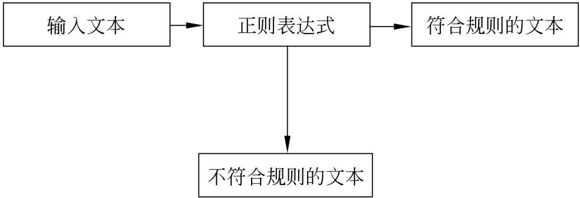
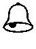

正则表达式是一种非常有用的工具。它通过一个字符串来描述、匹配一系列符合某个语法规则的字符串，从而可以对这些符合语法规则的字符串进行相应的处理，例如替换或者修改。Shell中的许多工具和命令都使用正则表达式来增强其功能，例如grep、sed和awk等。因此不理解正则表达式就无法发挥这些工具的强大功能。本章将介绍正则表达式的基础知识，以及如何在Shell编程环境中使用正则表达式。
本章主要涉及的知识点如下所述。
所谓正则表达式，实际上就是用来描述某些字符串匹配规则的工具。由于正则表达式语法简练，功能强大，得到了许多程序设计语言的支持，包括Java、C++、Perl以及Shell等。对于初学者来说，首次接触正则表达式非常难以接受，本节将介绍正则表达式的入门知识，以利于后面几节内容的学习。
在进行程序设计的过程中，用户会不可避免地遇到处理某些文本的情况。有的时候，用户还需要查找符合某些比较复杂规则的字符串。对于这些情况，如果单纯依靠程序设计语言本身，则往往会使得用户通过复杂的代码来实现。但是，如果使用正则表达式，则会以非常简短的代码来完成。
对于接触过Linux或者UNIX的用户来说，下面的命令并不陌生：
上面的命令非常简单，其作用是列出以.txt结尾的文件名，其中的星号“*”表示匹配任意的字符串。通常情况下，用户称上面命令中的“*”为通配符。当Shell遇到该符号时，会将其解释为任意的字符串。与通配符类似，正则表达式也是用来匹配文本的。通配符只是实现了一些非常简单的正则表达式的功能，与之相比，正则表达式能够更加准确地描述用户的需求。
正则表达式的历史非常悠久，并且与UNIX有着不可分割的联系。1940年，美国新泽西州的Warren McCulloch和出生在美国底特律的Walter Pitts这两位神经生理学家，研究出了一种使用数学方式来描述神经网络的方法。他们将神经系统中神经元描述成小而简单的自动控制元，这是正则表达式的雏形。
1956年，美国数学家斯蒂芬•科尔•克莱尼使用称为正则集合的数学符号来描述Warren McCulloch和Walter Pitts建立的模型，并由此引入了正则表达式的概念。
后来，美国的另外一位著名的计算机科学家肯•汤普逊（Ken Thompson），也就是大名鼎鼎的UNIX之父，将正则表达式引入了UNIX中的一个名称为QED的编辑器中。再后来，又将正则表达式引入了另外一个目前非常流行的编辑器ed中。最后，某些UNIX的命令例如grep也提供了对于正则表达式的支持。
目前，正则表达式在UNIX或者Linux中得到了广泛地应用。常见的支持正则表达式的UNIX工具如下所列。
从上面的列表可以发现，非常多的UNIX工具都提供了正则表达式的支持。因此，掌握正则表达式，可以更好地利用这些工具。
学习正则表达式的最好的方法就从学习和理解简单的例子开始。当读者对本书中的简单的例子完全理解之后，可以在例子的基础上不断地进行修改，然后自己进行测试。如此不断反复地实践，最终总会达到融会贯通的境界。
通常来说，读者在学习正则表达式时，需要注意以下几点。
1．重点在于理解元字符
在正则表达式里面，处于核心地位的就是元字符。正则表达式所描述的规则最终都是由元字符表达出来。因此，对于常见的正则表达式元字符，用户必须完全理解和掌握其涵义。只有这样，才有可能达到灵活运用的地步。
2．掌握好正则表达式的语法
正则表达式之所以简练，是因为它有着严格的语法规则。例如，元字符“*”表示匹配该符号前面的一个普通字符0次或者多次。也就是说，“*”的作用范围只是紧靠该字符前面的一个字符，而非多个字符。只有掌握好这些语法，才会读懂本书中的例子，也才能写出好的正则表达式。
3．开拓思路，寻找最佳的表达方法
对于同一个需求，可能会有许多种编写正则表达式的方法。但是，在这些方法中，总会有一种或者较少的几种方法是最简练的，并且是最完备的。所以，初学者在学习正则表达式的时候，一定不要满足于把问题解决了，而要不断思考有没有更好的解决方法。
当一个正则表达式完成之后，要保证这个表达式一定是准确的，就需要不断地测试，这样才可以确定其正确与否。在不同的环境下，用户需要不同的工具来帮助完成测试的过程。如果是在Shell命令行中，用户可以使用grep命令来测试。本书中的大部分例子，也是通过该命令讲解的。关于该命令的详细使用方法，将在8.4节中介绍。
【例8-1】演示如何通过正则表达式来查找字符串，代码如下：
在上面的代码中，第4行将Shell命令cat和grep的执行结果赋给变量str，第5行输出该变量的值。其中文本文件version.txt的内容请参见本书配套光盘的chapter7目录中的version.txt，如下：
上面的文件的内容比较简单，只有两行。
【例8-1】的执行结果如下：
在【例8-1】中，cat命令用来显示文件的内容，其后的竖线|是管道，表示将cat命令的输出结果作为后面的那个命令的输入。grep命令用来查找文本，后面的“rev”是要匹配的字符串。上面的命令的执行结果表示version.txt文件中的某一行含有“rev”这个字符串。
实际上，grep命令后面的参数可以换成任意的正则表达式，而不仅仅是一个普通的字符串。这些将在随后的例子中逐步介绍。
通过前面一节的学习，用户对于正则表达式应该有了初步的了解。本节将在前面一节的基础上，逐步介绍正则表达式的基础知识，主要是各种元字符及其使用方法。
简单地讲，正则表达式是对文本进行过滤的工具。而正则表达式之所以拥有过滤文本的功能，是因为它定义了一系列的元字符，通过元字符配合其他的字符来表达出一种规则，只有符合该规则的文本才能保留下来，而不符合该规则的文本则被过滤掉。如图8-1所示，描述了正则表达式在处理文本时的过程。
所谓元字符，是指用来描述字符的字符。元字符的作用在于对字符表达式的内容、转换以及各种操作信息进行描述。而正则表达式（Regular Expression，RE）就是由各种元字符和一般字符构成的字符串。

图8-1 正则表达式处理文本的流程
基本正则表达式（Basic Regular Expression，BRE），又称为标准正则表达式，是最早制订的正则表达式规范，仅支持最基本的元字符集。基本正则表达式是POSIX规范制订的两种正则表达式语法标准之一，另外一种语法标准称为扩展正则表达式，将在随后介绍。
基本正则表达式所定义的元字符主要有以下几种。
1．行首定位符“^”
“^”称为行首定位符，是正则表达式中的定位符之一，用来匹配行首的字符，表示行首的字符是“^”后面的那个字符。正则表达式中的定位符的作用与其他的元字符不同，它们不是用来匹配具体的文本，而是匹配某个具体的位置，例如行首定位符“^”就是用来匹配文本行的开头的字符的。
【例8-2】演示行首定位符的用法，代码如下：
在上面的代码中，第5行通过ls命令列出/etc目录中的文件，然后将执行结果传递给grep命令，通过grep命令筛选出以字符串“po”开头的文件名。
注意：尽管本书在解释行首定位符的时候使用了以某个字符串开头的说法，但是希望大家养成按照字符来理解正则表达式的习惯，即不要将“^po”理解为以字符串“po”开头的文本行，而是理解为第一个字符为字母“p”，紧跟着一个字母“o”的文本行。这一点非常重要，在学习正则表达式时必须注意。
该程序的执行结果如下：
2．行尾定位符“$”
与行首定位符的作用恰恰相反，行尾定位符的作用是用来定位文本行的末尾的。从语法上讲，行尾定位符的位置也与行首定位符相反，行首定位符位于所作用的字符之前，而行尾定位符位于所作用的字符之后。
【例8-3】演示行尾定位符的使用方法，代码如下：
与【例8-2】相反，该例将/etc目录中的以“conf”结尾的文件名罗列出来。该例的执行结果如下：
同样，用户在理解行尾定位符的时候，也应该从字符的角度去理解，也就是说【例8-3】匹配的是以字母“f”结尾，同时倒数第2～4个字符分别为“n”、“o”和“c”的文本行。
当学习完行首定位符和行尾定位符之后，细心的读者可能会提出一个疑问，即如何精确地匹配一个文本行？实际上，配合使用行首定位符和行尾定位符，可以很方便地解决这个问题，那就是将需要匹配的字符全部放在行首定位符和行尾定位符之间就可以了。例如，下面的表达式就筛选出完全匹配“cat”的文本行：
上面的表达式表示匹配以字符“c”开头，紧接着一个字母“a”，最后以字符“t”结尾的文本行，除了这3个字符之外，文本行中不含有其他任何字符。
如果用户将行首定位符和行尾定位符直接连起来，变成以下表达式，会发生什么情况：
上面的表达式所描述的规则就是同时匹配文本行的开头和结尾，所匹配的字符为空字符。另外，上述表达式也可以理解为先是行首，然后紧接着就是行尾，中间没有任何字符。所以，表达式“^$”的涵义是匹配所有的空行，行中没有任何字符，包括空白字符。
而下面的两种情况：
和
则没有任何应用意义，因为任何一个文本行都有开头和结尾，所以上面两个表达式匹配所有的行，包括表达式“^$”所表示的空行。
3．单个字符匹配“.”
圆点“.”用来匹配任意单个字符，包括空格，但是不包括换行符“\n”。当用户使用“.”符号后，意味着该位置一定有一个字符，无论它是什么字符。
【例8-4】演示圆点符号的用法，代码如下：
在上面的代码中，一共输出了两次文件名。其中第5行直接使用字符串“samba”去匹配文件名，这样的话，只要包含这个字符串的文件名都会被筛选出来，无论这个字符串的后面有没有其他字符。第12行使用了圆点符号“.”，表示字符串“samba”后面至少有一个字符。
该程序的执行结果如下：
在上面的输出结果中，横线上面的是第一次的筛选结果，可以发现在/etc目录下面有两个文件名都包含字符串“samba”。横线下面的是第二次的筛选结果，可以发现只有末尾为“4”的那个文件名被筛选出来。
注意：可以连续使用圆点符号来匹配多个字符，例如“l..p”匹配含有1个字母“l”，然后是任意两个字符，再接着是一个字母“p”的字符串。
4．限定符“*”
星号“*”是正则表达式中的限定符之一。限定符本身不代表任何字符，它是用来指定其前面的一个字符必须重复出现多少次才能满足匹配。星号“*”表示匹配其前导字符的任意次数，包括0次。
【例8-5】演示星号通配符的使用方法，代码如下：
在上面的代码中，第5行的正则表达式为“^sss*”，这表示匹配以字符“s”开头，紧跟着1个字符“s”，接着是0个或者多个字符“s”的文本行。
该程序的执行结果如下：
在上面的执行结果中，第1行和第2行都是以字符“s”开头，紧接着是一个字符“s”，后面是0个字符“s”，因此符合正则表达式所描述的规则。第3行的前面同样是两个字符“ss”，但是紧跟着一个字符“s”，这个文本行同样符合正则表达式所描述的规则。
5．字符集匹配“[]”
方括号“[]”的功能比较特殊，它是用来指定一个字符集合的，其基本语法为：
其中a、b和c表示任意的单个字符。只要某个字符串在方括号所在的位置上出现了方括号中的任意一个字符，就都满足匹配规则。另外，对于连续的数字或者字母，可以使用连字符“-”来表示一个范围，例如“[a-f]”表示匹配字母表中a到f中的任意一个字母，而“[0-9]”表示匹配任意单个数字。
【例8-6】演示方括号的使用方法，代码如下：
在上面的代码中，第5行的正则表达式表示匹配所有以字符“r”开头，紧跟着一个字符为“c”的文本行。第12行的正则表达式表示匹配以字符“r”开头，下面一个字符为“c”，再下面一个字符为单个数字的文本行。
该程序的执行结果如下：
在上面的结果中，横线上面的是所有以字符串“rc”开头的文本行，而横线下面的是第3个字符为数字的文本行。
注意：当元字符“*”或者“.”等位于字符集匹配符“[]”后，便变成了一个普通的字符，只有字面意义，没有特殊意义。
6．字符集不匹配“[^]”
前面已经介绍过行首定位符“^”和字符集匹配符“[]”。但是如果将这两个符号结合起来，则其意义会发生变化。符号“[^]”表示不匹配其中列出的任意字符，其语法如下：
其中a、b和c表示任意的单个字符。“[^]”符号的用法与符号“[]”的用法相同，不再举例说明。
除了前面介绍的6个元字符之外，在基本正则表达式中还定义了其他一些元字符。这些元字符使用较少，语法较繁琐，且在扩展正则表达式和PERL正则表达式中都有替代的元字符，所以不再详细说明。表8-1列出了基本正则表达式的其他元字符。
表8-1 其他的基本正则表达式元字符
| 元字符 | 说 明 | 举 例 |
| \(\) | 定义子表达式的开始和结束位置。在后续正则表达式中可以通过转义序列来引用子正则表达式。最多可以定义9个子表达式，通过\1～\9来引用 | 例如，正则表达式“\(love\).*\1”表示匹配两个“love”中间包含任意个字符的文本行，其中“\1”表示引用前面的“love” |
| x\{m, n\} | 区间表达式，匹配字符x重复的次数区间。其中x\{n\}表示最多重复n次，x\{m,\}表示最少重复m次，x\{m, n\}表示重复m～n次 | 例如，正则表达式“a\{2, 3\}”表示字符“a”重复2～3次 |
| \< | 词首定位符 | “\<hello”匹配含有以字符串“hello”开头的单词的文本行 |
| \> | 词尾定位符 | “hello\>”匹配含有以字符串“hello”结尾的单词的文本行 |
扩展正则表达式（Extended Regular Expression，ERE）支持比基本正则表达式更多的元字符，但是扩展正则表达式对有些基本正则表达式所支持的元字符并不支持。8.2.2节中介绍的元字符“^”、“$”、“.”、“*”、“[]”，以及“[^]”这6个元字符在扩展正则表达式中都得到了支持，并且其意义和用法都完全相同，不再重复介绍。接下来重点介绍一下在扩展正则表达式中新增加的一些元字符。
1．限定符“+”
加号“+”的意义与限定符“*”基本相同，但是星号“*”限定前面的字符可以出现任意次，而加号“+”却限定前面的字符至少出现一次。
【例8-7】演示加号“+”的使用方法，代码如下：
从上面的代码可以看出，该例只是对【例8-5】进行了一点改动，将其中的星号“*”换成了加号“+”。
该例的执行结果如下：
对比【例8-5】和【例8-7】，可以发现在【例8-7】中，少了两个文本行“ssh”和“ssl”，这是因为这两个文本行只包含了两个字符“s”。
注意：在介绍扩展正则表达式时，本书使用了egrep命令，而不是grep命令，这是因为grep命令使用的是基本正则表达式，而egrep命令默认使用扩展正则表达式。
2．限定符“?”
问号“?”是另外一个限定符，它用来限定前面的字符最多只出现1次，即前面的字符可以重复0次或者1次。
【例8-8】演示问号通配符的使用方法，代码如下：
该程序的执行结果如下：
可以发现，【例8-8】的执行结果与【例8-5】完全相同，这是因为在目录/etc中只包含不超过3个字符“s”的文件名，如果有超过3个字符“s”的文件名，则会在【例8-5】中出现，但是不会在【例8-8】中出现。
3．竖线“|”和圆括号“()”
竖线“|”表示多个正则表达式之间“或”的关系，其语法为：
圆括号“()”用来表示一组可选值的集合。竖线和圆括号经常在一起使用，表示一组可选值。
【例8-9】演示圆括号和竖线的使用方法，代码如下：
在上面的代码中，第5行的正则表达式表示匹配正则表达式“ssh”、“ssl”或者“^yum”的文本行。
该程序的执行结果如下：
在上面的输出结果中，第1行文本符合“ssh”，第2行文本符合“ssl”，第3～6行文本符合“^yum”。
在前面的内容中，介绍过方括号“[]”也可以用来表示一组可选字符集。例如下面的表达式：
表示可以匹配字符a、b或者c中的任意一个。这个表达式也可以使用竖线和圆括号来表达，如下：
上面2个表达式是等价的。
另外下面3个表达式也是等价的：
看了上面的这些例子，读者可能会觉得方括号“[]”和竖线结合圆括号这两种元字符之间没有太大的区别。但是一定不要混淆它们的概念。使用方括号只能匹配目标文本中的单个字符，而竖线的两边则可能是完整的正则表达式，也可能是任意长度的文本。
注意：扩展正则表达式取消了子表达式“()”和次数匹配“{m,n}”语法符号的转义符引用语法，在使用这两种语法符号时，不再需要添加转义符。
正则表达式是Perl语言的一大特色。Shell中的grep和egrep命令都支持Perl正则表达式。Perl正则表达式的元字符与扩展正则表达式的元字符大致相同，扩展正则表达式中的元字符在Perl正则表达式中都得到了支持。另外，Perl正则表达式还增加了一些元字符。下面对常用的增加的元字符进行介绍。
1．数字匹配\d
符号“\d”匹配0～9中的任意一个数字字符，等价于表达式“[0-9]”。
【例8-10】演示符号“\d”的使用方法，代码如下：
在上面的代码中，第5行使用正则表达式“^rc\d”来筛选以字符“r”开头，紧跟着一个字符“c”，然后是一个0～9之间的任意数字的文本行。
该程序的执行结果如下：
2．非数字匹配\D
符号“\D”和符号“\d”的作用恰好相反，后者是匹配一个0～9之间的单个数字字符，而前者则匹配一个非数字字符。“\D”等价于表达式“[^0-9]”。
3．空白字符匹配\s
符号“\s”匹配任何空白字符，包括空格、制表符以及换页符等，等价于表达式“[\f\n\r\t\v]”。
4．非空白字符匹配\S
符号“\S”匹配任何非空白字符，等价于表达式“[^\f\n\r\t\v]”。
前面已经讲过，一个正则表达式就是由一系列字符组成的字符串，其中包括元字符和普通字符。由于元字符和普通字符都有许多个，所以形成了元字符集和普通字符集这两个集合。关于元字符集我们已经在前面分成基本正则表达式、扩展正则表达式和Perl正则表达式3个小节介绍过了，扩展正则表达式和Perl正则表达式都是在基本正则表达式的基础上加以扩展而形成的。由于基本正则表达式产生的时间比较早，所以有些元字符比较繁琐，这些元字符在扩展正则表达式和Perl正则表达式中得到了改进。
接下来，再详细介绍一下普通字符集。在正则表达式中，普通字符集中的字符只表示它们的字面涵义，不对其他字符产生影响。正则表达式的最简单的形式就是只由普通字符集中的字符组成，不包含元字符。
正则表达式的字符集通常使用方括号表达式表示，例如：
第1个表达式表示匹配“china”或者“China”这2个字符串，第2个表达式表示不匹配“hello”这个字符串，第3个表达式表示匹配所有的大小写字母，第4个表达式表示匹配所有的个位数字，第5个表达式所表达的与第4个表达式等价，只是使用了连字符“-”来表示一段连续的数字。上面这些例子都是使用方括号表达式来表示某个字符集的具体应用。
在方括号表达式中，除了可以使用字面意义上的字符，例如a-z、A-Z或者0-9，以及其他一些字符之外，还可以使用POSIX字符集。POSIX字符集是为了在不同国家的字符编码中保持一致，而定义的一些特殊的字符类。表8-2列出了常用的POSIX字符类。
表8-2 常用的POSIX字符类
| 字 符 类 | 说 明 |
| [:alnum:] | 匹配任意一个字母或者数字，等价于A-Za-z0-9 |
| [:alpha:] | 匹配任意一个字母，等价于A-Za-z |
| [:digit:] | 匹配任意一个数字，等价于0-9 |
| [:lower:] | 匹配任意一个小写字母，等价于a-z |
| [:upper:] | 匹配任意一个大写字母，等价于A-Z |
| [:space:] | 匹配任意一个空白字符，包括空格、制表符、换行符，以及分页符等 |
| [:blank:] | 匹配空格和制表符 |
| [:graph:] | 匹配任意一个看得见的可打印字符，不包括空白字符 |
| [:print:] | 匹配任何一个可以打印的字符，包括空白字符，但是不包括控制字符、字符串结束符'\0'、EOF文件结束符（-1） |
| [:cntrl:] | 匹配任何一个控制字符，即ASCII字符集中的前32个字符，例如换行符、制表符等 |
| [:punct:] | 匹配任何一个标点符号，例如“[]”、“{}”或者“,”等 |
| [:xdigit:] | 匹配十六进制数字，即0-9、a-f，以及A-F |
与其他普通字符一样，表8-2中列出的字符类也需要放在方括号中。例如：
等价于以下表达式：
本章前面的小节中详细介绍了正则表达式的基础知识。为了使读者更加清楚如何使用正则表达式，本节将详细介绍正则表达式的相关应用。
在所有的正则表达式中，单个字符的匹配是最基本、最简单的一种。对于初学者来说，只有掌握了最基本的正则表达式，才有可能去学习和理解复杂的正则表达式。因此，我们首先介绍最简单的单个字符的匹配。
在正则表达式中，可以用来匹配单个字符的表达式大致有4种，分别是单个一般字符、转义后的元字符、圆点“.”表达式，以及方括号表达式。下面将分别进行介绍。
1．单个一般字符
所谓一般字符，是指除了正则表达式中已经定义的元字符之外的所有字符，例如英文字符、数字、空白字符以及标点符号等。这些一般字符在正则表达式中都只是表达它们自身的字面意义，没有其他的意义。当需要匹配某个一般字符时，可以直接将该字符作为表达式或者是表达式的一部分。
【例8-11】演示如何使用普通字符作为表达式来匹配单个字符，代码如下：
在上面的代码中，正则表达式比较简单，只有一个普通字符“a”，这个表达式表示匹配含有字符“a”的文本行。
该程序的执行结果如下：
从上面的执行结果可以得知，一共有3行含有字符“a”。
2．转义后的元字符
在前面介绍基本正则表达式、扩展正则表达式以及Perl正则表达式的时候，都介绍了一些元字符。如果想要匹配这些元字符本身，则需要在这些字符的前面加上转义字符“\”。通过这个操作，就可以关闭这些元字符的特殊意义，而只保留其字面意义。
例如，想要匹配圆点“.”就可以使用表达式“\.”。经过转义之后，这个表达式就表示一个圆点符号，而不是任意单个字符。如果想要匹配其他的元字符，例如问号“?”，同样可以使用表达式“\?”。
假设有一个名称为demo3.txt的文本文件，其内容如下：
上面的demo3.txt只有4行，其中，第2行和第4行都含有句号。
【例8-12】演示直接使用元字符圆点作为表达式，则会导致匹配结果出错，代码如下：
在上面的代码中，第4行直接使用了圆点“.”，没有经过转义。在这种情况下，Shell会认为这是一个元字符，其意义为表示任意的单个字符，而非普通字符圆点。
该程序的执行结果如下：
正因为Shell把其中的圆点看做一个元字符，所以【例8-12】把所有的文本行都输出了。为了能够得到正确的结果，我们可以对【例8-12】进行修改，在圆点的前面加上转义字符，修改后的代码如下：
该代码的执行结果如下：
可以发现，含有圆点的第2行和第4行都被输出了，而其他两行则没有被输出。
注意：反斜线“\”也是一个元字符，如果想要匹配反斜线，也需要在其前面加上转义字符，即表达式“\\”表示匹配一个反斜线。
3．圆点表达式
圆点“.”表示匹配任意单个字符，除了换行符之外。关于圆点表达式的使用方法，请参见【例8-4】，此处不再重复介绍。
4．方括号表达式
前面已经介绍过，方括号表达式用来表示一个可选字符的集合。尽管通常情况下，在方括号中含有多个字符，但是一次只能从这些字符中选择一个，因此，方括号表达式仍然表示的是匹配单个字符。例如，表达式“[abc]”就表示匹配字符“a”、“b”或者“c”中的任意一个。同时，这种表示方法也是最简单的一种形式，也就是直接将所要匹配的字符都在方括号中罗列出来。
如果在方括号中的字符列表前面加上符号“^”，则表示取反的意思。也就是说，不匹配方括号中列出来的任何一个字符。例如，表达式“[^abc]”表示不匹配“a”、“b”和“c”这3个字符中的任何一个。
对于一段或者几段连续的字符，可以使用连字符来简化书写形式。例如，想要匹配所有的英文字母，可以使用表达式“[a-zA-Z]”。如果想要匹配所有的单个数字，可以使用表达式“[0-9]”。
另外，前面还介绍了POSIX字符集，这些字符集都可以用在方括号表达式中，用来表示某些字符。例如，所有的字母和数字，可以使用表达式“[[:alnum:]]”表示，等价于“[a-zA-Z0-9]”。所有的数字可以使用表达式“[[:digit:]]”表示，等价于“[0-9]”。所有的字母可以使用表达式“[[:alpha:]]”表示，等价于“[a-zA-Z]”。
注意：当元字符位于方括号中时，除了极少的几个元字符，例如连字符“-”或者“^”之外，其他元字符都将失去其特殊意义，而只保留字面意义。例如，表达式“[\.]”表示的是反斜线“\”和圆点“.”这两个字符。如果想要匹配圆点，则只要使用“[.]”就可以了。
接下来再介绍如何匹配多个字符。正则表达式可以使用多种方法来匹配多个字符，其中最简单的一种就是将多个字符按照指定的顺序拼接起来。
【例8-13】演示如何匹配一个由多个字符组成的字符串，代码如下：
在上面的代码中，第5行的正则表达式为“matter”，这个表达式是由6个普通字符组成的一个单词，因此，这个表达式将匹配含有这个字符串的文本行。
该程序的执行结果如下：
可以发现，在上面输出的一行文本中，含有字符串“matter”。
除了使用普通字符之外，还可以使用其他的字符集，例如方括号表达式。下面的例子就演示了方括号和普通字符一起使用的方法。
【例8-14】演示如何将普通字符和方括号表达式混合起来使用，代码如下：
第5行的表达式表示匹配首先是一个字符“o”，紧接着是一个字符“r”或者“u”的文本行。
该程序的执行结果如下：
从结果中可以得知，上面的每一行都含有字符串“or”或者“ou”。
在某些情况下，直接将字符拼接起来不失为一种非常直观的方法。但是，如果字符比较多的话，会导致表达式非常长。因此，用户可以使用其他的方式来表达。
在前面的内容中，介绍了两个限定符，分别是星号“*”和加号“+”。其中星号可以在前面所讲的3种正则表达式中使用，而加号则不能在基本正则表达式中使用。这两个元字符的区别在于星号表示匹配0个或者多个任意的字符，而加号表示匹配1个或者多个任意的字符。
【例8-15】使用星号来匹配多个字符“o”，代码如下：
在上面的代码中，第5行的表达式将匹配字符串“lking”、“loking”、“looking”以及“loooking”等。
该程序的执行结果如下：
在本例中，由于没有字符“l”后面不跟字符“o”的字符串，所以将其中的星号换成加号也会得到同样的结果。
尽管星号或者加号非常好用，但是用户不能精确地控制字符重复的次数。为了能够准确地表达前置字符重复出现的字符，用户还需要使用其他的元字符。在基本正则表达式中，用户可以使用元字符“\{m, n\}”表示，而在扩展正则表达式和Perl正则表达式中，用户在使用前面的元字符时无需将花括号转义，直接使用“{m, n}”即可。其中的参数m表示前置字符最少出现的次数，而参数n表示前置字符最多出现的次数。
由元字符“{m, n}”可以衍生出另外两种表示方法。其中，元字符“{m}”表示前置字符出现m次，元字符“{m,}”表示前置字符最少出现m次。
在中国，免费电话号码的前缀是800，其格式通常如下：
其中，前面3位是固定的，后面的6位都是数字，通常使用连字符将其分割开来。为了能够匹配这种格式的电话号码，用户可以使用正则表达式。
假设存在一个名称为demo4.txt的文本文件，其内容如下：
可以得知，每一行都是一个800免费电话号码，其中，有些电话号码的格式并不符合上面的格式。
【例8-16】演示如何通过正则表达式来筛选符合指定格式的电话号码，代码如下：
在上面的代码中，第5行的正则表达式的前面4个字符都是固定的普通字符，所以可以用普通字符来表达；紧接着是3个数字，在此使用的是POSIX字符类，当然其中的“[:digit:]”也可以直接写做“[0-9]”；再接下来是一个连字符，最后是4个数字，并且以数字结尾。由于grep命令默认使用的是基本正则表达式，而在基本正则表达式中花括号表达式需要转义，所以本例中使用egrep命令。
该程序的执行结果如下：
从上面的执行结果可以发现，demo4.txt文件中不符合格式要求的最后两个电话号码被过滤掉了。
注意：【例8-16】中的正则表达式一定要在最后加上“$”符号，否则最后一个电话号码不能被过滤掉。
匹配字符串的开头或者结尾非常有用，在某些情况下，用户也必须对字符串的开头和结尾进行限制。在【例8-16】中，我们已经使用美元符号“$”来对电话号码的结尾进行了匹配。
在正则表达式中，用户可以通过定位符来对字符串开头或者结尾进行匹配，定位符又称为锚点。一共有两个定位符，分别为行首定位符“^”和行尾定位符“$”。前者用来匹配文本行的开头字符，后者用来匹配文本行的结尾字符。
如果行首定位符和行尾定位符一起使用，则这两个符号之间的表达式就匹配整个字符串或者文本行。如果“^”符号后面紧跟着“$”符号，即“^$”，则表示一个空行。因为行首后面紧跟着行尾，行中没有任何字符。
在理解和使用定位符时，一定要注意定位符仅仅影响到其后置字符或者前置字符，而不是一个字符串。
假设存在一个名称为demo5.txt的文本文件，其内容如下：
在上面的内容中，有些行是以3个数字开头，有些行是以其他字符开头，有些行是以两个数字开头。下面的工作是要将这些行中以3个数字开头的筛选出来。
【例8-17】演示如何使用行首定位符筛选数据行，代码如下：
在上面的代码中，第5行的表达式使用了egrep命令，其中^[[:digit:]]{3}表示以任意3个数字开头，当然也可以写做^[0-9]{3}。
该程序的执行结果如下：
从上面的结果可以得知，demo5.txt文件中以两个数字，以及以字母开头的行已经被过滤掉。
如果想要匹配以4个数字结尾的文本行，则可以使用行尾定位符，如下面的例子所示。
【例8-18】演示行尾定位符的使用方法，代码如下：
上面代码中第5行的表达式[[:digit:]]{4}$表示以4个数字结尾的文本行。
该程序的执行结果如下：
正则表达式按照从左到右的顺序进行计算，并且遵循一定的优先级，这一点与算术表达式非常相似。所谓优先级，是指在正则表达式中，当多个运算符同时出现时，高优先级的运算符将被先处理，低优先级的运算符将被后处理。表8-3按照从高到低的顺序依次列出了运算符的优先级。
表8-3 正则表达式运算符优先级
| 运 算 符 | 说 明 |
| \ | 转义符 |
| [] | 方括号表达式 |
| () | 分组 |
| *、+、?、{m}、{m,}、{m, n} | 限定符 |
| 普通字符 | 按照从左到右的顺序 |
| ^、$ | 定位符 |
| | | 或运算 |
在表8-3列出的运算符中，有些在基本正则表达式没有或者有不同的表示方法。例如在基本正则表达式中没有加号元字符+和分组元字符()；{m}、{m,}以及{m, n}这3种元字符需要将花括号转义，分别变成\{m\}、\{m,\}以及\{m, n\}。另外，也没有或运算符|，但是这不影响总体的优先级顺序。
当用户了解了运算符的优先级之后，就可以进一步地对【例8-17】和【例8-18】中的两个正则表达式加深理解。在表达式^[[:digit:]]{3}中，由于方括号的优先级最高，所以先计算方括号表达式，得到匹配数字的结果，接下来是计算限定符，得到了3个数字的结果，最后计算定位符，得到以3个数字开头的结果。用户也可以按照这个思路去对表达式[[:digit:]]{4}$加深理解。
在8.2节刚开始的时候已经讲过，在学习正则表达式的时候应该按照字符的角度去理解和掌握。因此，限定符*或者+都作用于其前面的字符或者元字符上面。尽管这样已经保证了正则表达式的基本能力，但是还会出现一些无法正常表达的情况。
例如，在进行网页设计的时候，开发者经常会使用空格来实现页面中文本的对齐，而在HTML语言中，空格是使用 表示的，这6个字符连在一起表示一个HTML文档中的空格符。在HTML文档的不同位置，空格符重复出现的次数也不一致。
下面的代码是一个HTML文档的一个片段：
在上面的代码中，第1行含有2个不连续的空格符，这2个空格符之间有1个分号。第2行中含有2个连续的 表示的空格符，第3行含有2个连续的空格符，第5行含有1个空格符。
【例8-19】通过正则表达式定位所有的2个连续的HTML空格符，代码如下：
在上面的代码中，第4行表达式为 {2}，用户试图使用该表达式来匹配两个连续的 。
该程序的执行结果如下：
从上面的执行结果可以发现，程序并没有输出用户希望得到的结果，而是输出了含有两个不连续的空格符的文本行。为什么会出现以上结果？根据前面的介绍，限定符仅仅作用于其前置字符，在表达式 {2}中，限定符{2}仅仅作用于字符;，因此，这个表达式的意思是匹配字符串 后面跟着两个分号的文本行，这个意思与用户的真实意图有着明显的区别。
为了能够正确表达需求，用户可以使用子表达式来表示。所谓子表达式，是指由多个普通字符或者元字符组成的一个小的正则表达式。与正则表达式一样，子表达式本身也是一个完整的表达式，但是在使用时，子表达式是作为一个大的正则表达式的一部分来使用的，而不是单独使用。在正则表达式中，子表达式作为一个整体来看待。子表达式使用圆括号()括起来。
对于【例8-19】，用户可以使用子表达式来解决匹配的问题，修改后的代码如下：
在上面的代码中，第3行使用圆括号将空格符 括起来，形成一个子表达式，这样的话，就被看做一个整体，后面的限定符{2}的作用对象就是这个子表达式。
修改后的程序的执行结果如下：
可以发现，引入子表达式后，程序输出了正确的匹配结果。
下面再看另外一个例子，用正则表达式来匹配IP地址。IP地址是由圆点隔开的四组数字，例如202.116.0.2就是一个合法的IP地址。在IP地址的四组数字中，每一组的最小值为十进制0，最大值为十进制的255。
假设存在一个存储IP地址的文本文件，名称为ip.txt，其内容如下：
在上面的代码中每一行描述了一个IP地址，其中第1行和第3行的IP地址是正确的，而其他的IP地址则是错误的。
【例8-20】演示通过正则表达式匹配IP地址的方法，代码如下：
第5行的正则表达式为^([[:digit;]]{1,3}\.){3}([[:digit:]]{1,3}$)，其中[[:digit:]]{1,3}\.是一个子表达式，表示匹配1～3个数字，然后是一个圆点。整个表达式描述的字符串以3组重复的1～3个数字后跟一个圆点为开头，然后以1～3个数字结尾。
该程序的执行结果如下：
从上面的执行结果可以发现，前面两行的代码是正确的IP地址，而第3行的代码却是一个错误的IP地址。之所以会输出这个错误的IP地址，是因为【例8-20】中的正则表达式并没有严格规定每一组数组的范围，从而导致了每一组中的数字的范围超出了255。
为了改进IP地址的匹配规则，用户需要对【例8-20】的表达式进行改进，使其对每一组数字进行更加精确地限制。
【例8-21】通过正则表达式分别对IP地址的3组数字给出明确的匹配规则，代码如下：
第5行的表达式比较复杂，下面对其进行简单地分析。为了能够准确地表达IP地址的规则，用户可以进一步分析IP地址的每一组的数字的特征，将每一组数字都分为4段，分别为0～99、100～199、200～249，以及250～255，可用子表达式[0-9]{1,2}|1[0-9]{2}|2 [0-4][0-9]|25[0-5]来表达。其中[0-9]{1,2}表示0～99，1[0-9]{2}表示100～199，2[0-4][0-9]表示200～249，25[0-5]表示250～255。然后，各个组之间使用圆点隔开。因为IP地址都是由四组数字组成，任何多于或者少于四组都是错误的，所以在表达式的开头加上行首定位符，在表达式的结尾加上行尾定位符。
该程序的执行结果如下：
注意：出于便于阅读的目的，有些用户习惯使用圆括号来将表达式进行分组，不管是否需要。尽管对执行结果并没有什么影响，但是会影响表达式的解释效率。
有一点必须明确，那就是Shell本身并不支持正则表达式，使用正则表达式的是一些Shell命令和工具，例如grep、awk以及sed等。但是，Shell使用了正则表达式中的某些元字符作为其通配符，常用的有*、?、[]、{}以及^等。这些字符在Shell中的意义与在正则表达式中的意义有些区别，例如*表示匹配任意的字符，而非正则表达式中的限制其前导字符的0次或者多次重复。?表示一个字符，而非其前导字符的0次或者1次重复。
为了使读者了解通配符的使用方法，下面以ls命令为例来依次介绍常用的通配符的使用方法。
如果用户想要列出以ex开头的当前目录中所有的文件，可以使用以下命令：
在上面的命令中，ex*表示匹配以字符串ex开头的所有的文件名。
如果想要列出以字符d或者e开头的文件名，则可以使用方括号将这些字符列出来，如下：
在某些情况下，文件名是按照字母或者数字顺序来编号的，在这种情况下，用户可以使用连字符来表示一个范围，这与正则表达式中的表达方法是一致的，如下：
上面的命令表示列出以ex8-开头，然后是编号1～9，接着是.sh的文件名。
在Shell的命令中，grep命令是一个与正则表达式关系非常密切，并且使用也非常频繁的命令。在本章的绝大部分例子中，都使用了grep命令来讲解。为了使读者掌握这个命令的使用方法，本节将对其进行详细介绍。
grep命令的名称来自于全局搜索正则表达式并打印文本行（Global Search Regular Expression and Print out the line）的缩写。它是一个非常古老的UNIX命令，也是一种强大的文本搜索工具。grep命令使用正则表达式来搜索文本，并且把匹配的文本行打印出来。
grep命令的基本语法如下：
在上面的语法中，options表示选项，如表8-4所示。pattern表示要匹配的模式，file表示一系列的文件名。grep命令会从一个或者多个文件中搜索满足指定模式的文本行，并且打印出来。模式后面的所有的字符串参数都被看做文件名。
表8-4 常用的grep命令选项
| 选项 | 说 明 |
| -c | 只打印匹配的文本行的行数，不显示匹配的内容 |
| -i | 匹配时忽略字母的大小写 |
| -h | 当搜索多个文件时，不显示匹配文件名前缀 |
| -l | 只列出含有匹配的文本行的文件的文件名，而不显示具体的匹配的内容 |
| -n | 列出所有的匹配的文本行，并显示行号 |
| -s | 不显示关于不存在或者无法读取文件的错误信息 |
| -v | 只显示不匹配的文本行 |
| -w | 匹配整个单词 |
| -x | 匹配整个文本行 |
| -r | 递归搜索，不仅搜索当前目录，还要搜索其各级子目录 |
| -q | 禁止输出任何匹配结果，而是以退出状态码的形式表示搜索是否成功，其中0表示找到了匹配的文本行 |
| -b | 打印匹配的文本行到文件头的偏移量，以字节为单位 |
| -E | 支持扩展正则表达式 |
| -P | 支持Perl正则表达式 |
| -F | 不支持正则表达式，将模式按字面意义匹配 |
grep命令的模式非常灵活，可以是字符串，也可以是变量，还可以是正则表达式。但是如果模式中含有空格，则需要将模式使用双引号引起来，以避免grep命令将空格后面的模式误认为文件名。当然，在绝大部分情况下，使用单引号将模式引用起来也可以。
例如，下面的命令将搜索名称为demo3.txt文件中是否含有字符串simple的文本行，命令如下：
从上面的输出结果可以得知demo3.txt文件有一行含有指定的模式simple。
如果只想统计含有某个模式的行数，则可以使用-c选项，如下：
从上面的输出结果可以得知，含有模式simple的文本行只有一行。
随着UNIX的发展，grep命令也在不断地完善。到目前为止，grep命令族已经包括grep、egrep以及fgrep等3个命令。egrep和fgrep命令跟grep命令只有很少的区别。其中，egrep命令是grep命令的扩展，它使用扩展正则表达式作为默认的正则表达式引擎，因此，egrep命令支持更多的元字符。fgrep命令是fixed grep或者fast grep的缩写。在fgrep命令中，所有的字母都看做单词，也就是说，在fgrep命令中，所有的正则表达式中的元字符都将作为一般字符，仅仅拥有其字面意义，不再拥有特殊意义。
本章详细介绍了Shell正则表达式的相关知识，包括什么是正则表达式、正则表达式的基础知识、正则表达式的具体应用，以及grep命令族。重点在于掌握基本正则表达式、扩展正则表达式及Perl正则表达式的元字符及使用方法、正则表达式的字符集、如何匹配单个字符、如何匹配多个字符、定位符的使用方法，以及子表达式等。在下一章中，将介绍Shell的基本文本处理方法。